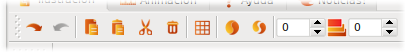
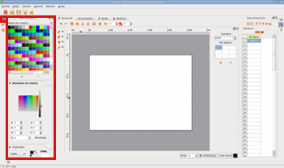
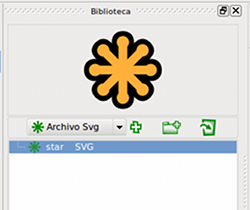
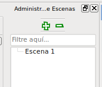
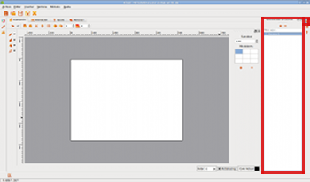

Fig # 13. Animation Interface Module
Animation Module
This is the module you will spend most of
your time in when you are working with Tupi. You know why?
This is where you will build each frame of your animation; every
line of every character and every piece of the scenario for which
you want to tell the story.
In other words, if you wanted to create an animation of a
character walking down a street, this tab is where you will
design the character and each of the positions in which it will
appear as you move it.
Fig # 13. Animation Interface Module
Tip: Whenever you wish to see the animation module, simply press Ctrl + 1.
Fig # 14. Animation Module Shortcut
In the previous section, we looked at the general components of the Tupi interface. Now let’s look in a little more detail at every resource available from this module.
1. Workspace area
Think of the workspace as a blank
canvas, the space available for the design of each of the frames
that will be part of the animation. There are two ruler scales,
one at the top and one the left. In the centre, there is a
rectangular white background, representing the dimensions of the
frame, or if you prefer, your “paper”. On the right
side you willfind a dynamic panel that contains the properties of
whichever tool is selected at that time and at the bottom, a
small set of controls related to the Workspace.
Tip: Anything which does not draw into the frame, will not
be visible in the animation.

Fig # 15. Workspace area
2. Primary Editing Functions
Panel
Located in the upper left of the Workspace, this panel
offers all the usual basic editing features when working on an
illustration; Re-do, Undo, Copy, Paste, Cut, Delete, Group
and Ungroup.
Additionally, it offers two more very useful options: a
Grid to guide the illustrator, which can be activated or
deactivated at will and Onion Skin, functionality that
allows you to make the current frame semi-transparent in order to
see drawings in previous and subsequent frames. We will delve
more into the use of the latter in Chapter 2 -Let’s make an example!
|  |  |
Fig # 16. Primary Editing Functions Panel
3. Tools Panel
This panel is located on the left edge of the workspace
and provides you with the necessary tools to draw and perform
special operations on your illustration. Each resource is grouped
by type in the following sub-menus:
 |
 |
Fig # 17. Tools Panel
4. Left Sidebar
Colour Palette
As its name implies, this is the panel where you choose the
colour that you want to draw with, regardless of the shape or
form that you are working with. It is important to note that
selecting a new colour will not change the colour of anything
you’ve already drawn, but everything you draw after selecting it
will be in the new colour (until you choose another one).
 |
 |
Fig # 18. Colour Palette
Tip: Note that in addition to using single colours, you can also use gradients, i.e. combinations of colours that blend gradually on the same figure as in the following example, where the gradient starts as a light green and ends in black:

Fig # 19. Gradient Example
Pen Properties
The Pen in this context defines the qualities of the tool
you’ll use to draw, you may want to think of it as the type
of pen tip or brush you’re going to use. This panel allows
you to modify characteristics of the brush, such as its
thickness, the shape of the stroke ends and the continuity of the
line (for example, you can make different types of dotted line,
if you wish).
 |
 |
Fig # 20. Pen Properties
Object Library
The function of this component is to store a copy of the figures
or images that are part of your project that you want to reuse in
other frames of the same animation or even in another project.
This resource is useful for animations where you know some of the
components that you have drawn will appear again and again.
|  |  |
Fig # 21. Object Library
5. Right Sidebar
Scene Manager
What is a scene? I’ll try to give a simple definition: think of a
movie or a TV commercial, I’m sure you’ve noticed that
they’re always made up of small pieces shot separately and
then arranged to tell the story? These fragments are usually
easily recognised by changes in the position of the camera or the
spectator’s point of view.
Once this concept is clear, it’s easy to explain this
component, through this panel you will be able to create, modify
or delete each of the scenes that you include in your animation
project.
Tip: It is important that before you start your animation
project, you have very clear idea of what scenes you will develop
and in what order you’re going to create them. Pay close
attention to the advice in “First
things first!”.
|  |  |
Fig # 22. Scene Manager
Exposure Sheet
The Exposure Sheet is a vital resource to illustrate the
sequence of the frames that are part of a scene. Through it, you
can add or delete new frames and new layers to each of your
scenes. Moreover, from this panel you are able to select frames
to edit in the Workspace with a single click. This
functionality combined with the onion skin feature in the
Tools Panel, will offer the necessary elements to make your
animations look fluid. This will be much easier to understand,
after you review the example in Chapter
2 .
 |
 |
Fig # 23. Exposure Sheet